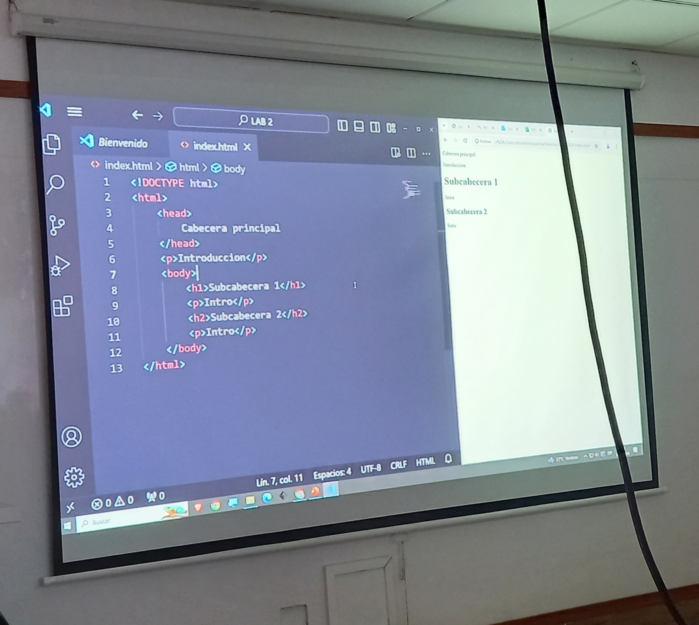

Sesión 1:
Durante la primera semana aprendí qué es HTML, el cual es una herramienta dónde se trabaja con etiquetas para crear la parte estructural de una página web. Asimismo, se nos explicó brevemente también qué era CSS (presentational) y JavaScript (behavioral). Principalmente, aprendimos para qué son los elementos que se deben usar en HTML. Por ejemplo, para que sirve el !DOCTYPE, los elementos de cierre, los encabezados y como usar templates. Asimismo, a hacer listas, insertar vínculos e imágenes.
Sesión 2:
Desde mi experiencia como alumna, es la primera vez que aprendo a editar una página web desde la parte estructural interna, ya que solo tengo experiencia diseñandolas desde un ámbito más visual. Hasta ahora, veo que el curso nos va a servir para poder obtener un valor agregado a nuestras habilidades, sobre todo en mi carrera, dónde también piden profesionales capaces de entender conceptos técnicos y dar soluciones a dificultades en el área de experiencia de usuario para potenciales clientes.
